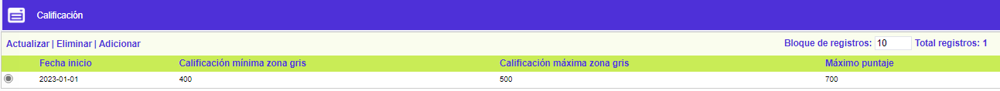
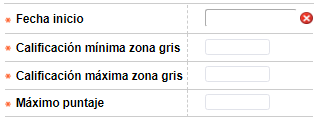
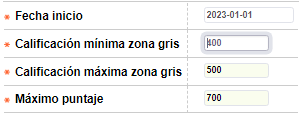

Parámetros de solicitudes - Calificación
Calificación: Formulario que muestra el código y nombre de las franquicias autorizadas y licenciadas, para las cuales se definen los rangos de calificación del scoring que dejarán la solicitud en zona gris; aquellas solicitudes que obtengan una calificación inferior a la mínima serán negadas, y las que obtengan una calificación superior a la máxima serán aprobadas.
El formulario contiene la opción Calificación y un botón en la parte superior para volver al formulario principal.
Calificación: El formulario contiene las opciones Actualizar, Eliminar, y Adicionar. Adicionalmente, cuenta en la parte superior con un botón para volver al formulario anterior.

Adicionar: Si el usuario invoca la opción Adicionar se despliega un formulario con los siguientes campos:

Fecha inicio |
Este campo acepta cualquier fecha en el formato correspondiente. No puede ser nulo. El sistema controla que una misma fecha se pueda parametrizar para diferentes marcas, pero para una misma marca no acepta la misma fecha más de una vez |
Calificación mínima zona gris |
El campo Calificación mínima zona gris, acepta cualquier dato numérico de máximo cinco (5) dígitos. No puede ser nulo. |
Calificación máxima zona gris |
El campo Calificación máxima zona gris, acepta cualquier dato numérico de máximo cinco (5) dígitos. No puede ser nulo. El sistema controla que el valor de este campo sea igual o mayor al valor de Calificación mínima zona gris |
Máximo puntaje |
El campo Máximo puntaje, acepta cualquier dato numérico de máximo cinco (5) dígitos. No puede ser nulo. El sistema controla que el valor del Máximo puntaje sea igual o mayor al valor de Calificación máxima zona gris. |
Actualizar: Al activar ese enlace se despliega un formulario en el cual los únicos campos modificables son: Calificación mínima zona gris, Calificación máxima zona gris, y Máximo puntaje.

Formulario principal |Filtros |Funcionarios| Negación | Variables cupo| Globo de localización